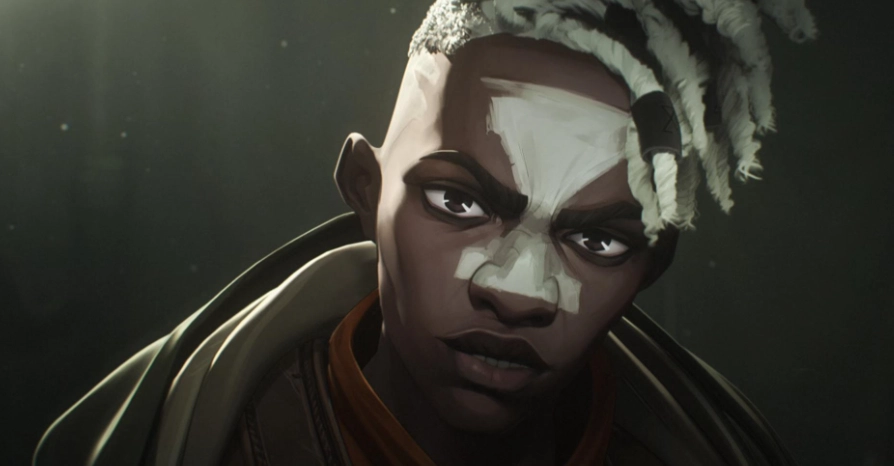

En su infancia, conocido por sus amigos como Little Man, Ekko es un chico de Los Carriles que trabajaba para Benzo en su tienda de baratijas y que no podía evitar espiar a los clientes de la tienda, entre ellos a Jayce, al cual sigue hasta el penthouse de los Kiramann, le pasa esta jugosa información al grupo de Vi para que se encarguen de una misión en Piltover, que desencadena una serie de eventos que pasaran a cambiar la vida de todo Zaun. Al morir Benzo y Silco pasar a dominar Los Carriles, Ekko forma un grupo de “justicieros” que se encargan de sabotear la organización de Silco y del resto de los Barones Químicos, estos son conocidos como Firelights.